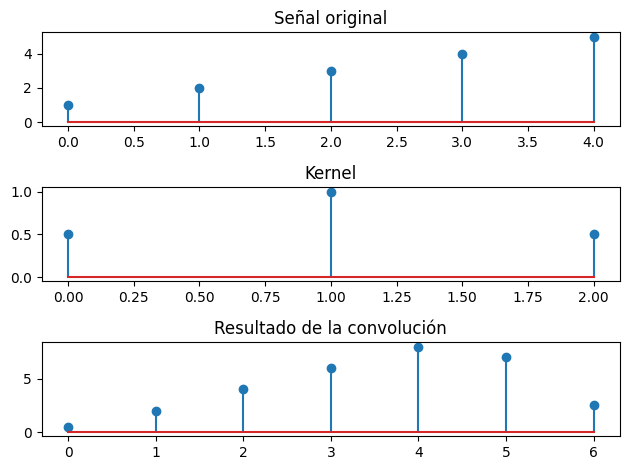
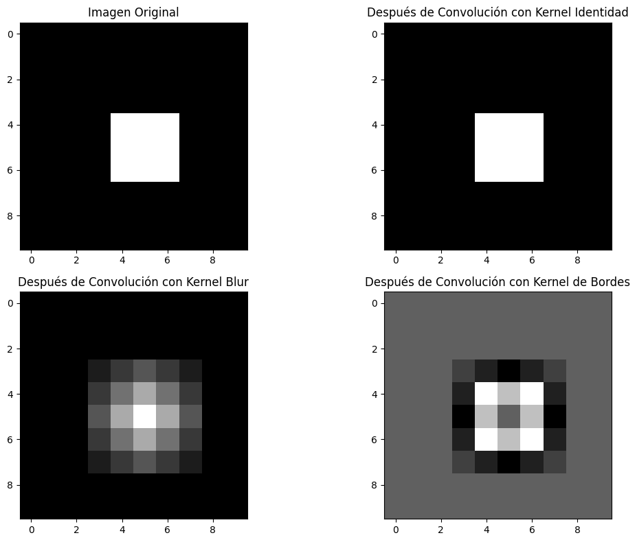
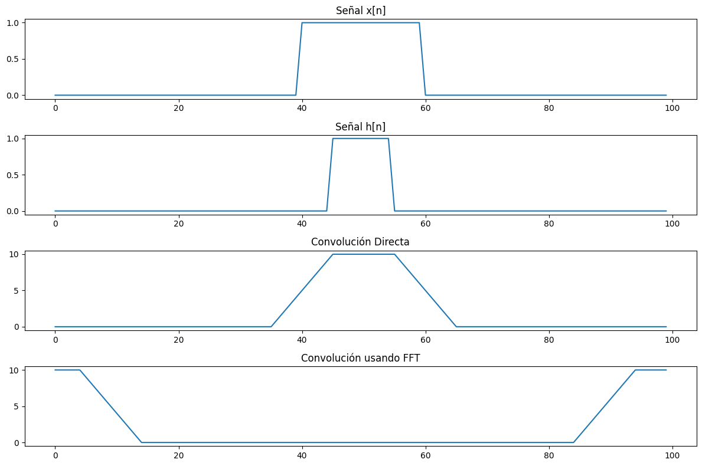

Introducción a la Convolución#
La convolución es una operación matemática fundamental en el procesamiento de señales, imágenes y también en redes neuronales convolucionales. Permite combinar dos funciones para producir una tercera que representa cómo la forma de una es modificada por la otra.
Definición Matemática#
La convolución de dos funciones \(f\) y \(g\) se denota como \(f * g\) y se define matemáticamente como:
Convolución Continua#
\((f * g)(t) = \int_{-\infty}^{\infty} f(\tau) g(t-\tau) d\tau\)
Convolución Discreta#
Para señales discretas, la convolución se define como:
\((f * g)[n] = \sum_{m=-\infty}^{\infty} f[m] g[n-m]\)
En el procesamiento de imágenes, utilizamos convolución bidimensional:
\((f * g)[i, j] = \sum_{m} \sum_{n} f[m, n] g[i-m, j-n]\)
Convolución con NumPy#
Veamos cómo implementar la convolución usando NumPy:
import numpy as np
import matplotlib.pyplot as plt
# Configuración para mostrar gráficos más grandes
plt.figure(figsize=(12, 6))
<Figure size 1200x600 with 0 Axes>
<Figure size 1200x600 with 0 Axes>
Convolución 1D#
Vamos a implementar la convolución 1D con un ejemplo sencillo:
# Definimos dos señales discretas
signal = np.array([1, 2, 3, 4, 5])
kernel = np.array([0.5, 1, 0.5])
# Usamos np.convolve para calcular la convolución
# 'full': devuelve la convolución completa
# 'same': devuelve solo la parte central de la convolución, del mismo tamaño que signal
# 'valid': devuelve solo las partes donde las señales se superponen completamente
convolution_full = np.convolve(signal, kernel, mode='full')
convolution_same = np.convolve(signal, kernel, mode='same')
convolution_valid = np.convolve(signal, kernel, mode='valid')
print("Señal original:", signal)
print("Kernel:", kernel)
print("Convolución (full):", convolution_full)
print("Convolución (same):", convolution_same)
print("Convolución (valid):", convolution_valid)
# Visualización
plt.subplot(3, 1, 1)
plt.stem(signal)
plt.title("Señal original")
plt.subplot(3, 1, 2)
plt.stem(kernel)
plt.title("Kernel")
plt.subplot(3, 1, 3)
plt.stem(convolution_full)
plt.title("Resultado de la convolución")
plt.tight_layout()
plt.show()
Señal original: [1 2 3 4 5]
Kernel: [0.5 1. 0.5]
Convolución (full): [0.5 2. 4. 6. 8. 7. 2.5]
Convolución (same): [2. 4. 6. 8. 7.]
Convolución (valid): [4. 6. 8.]

Implementación Manual de la Convolución 1D#
Para entender mejor el proceso, implementemos la convolución manualmente:
def convolucion_manual(signal, kernel):
# Longitudes de las señales
M = len(signal)
N = len(kernel)
# La longitud de la salida será M+N-1
salida = np.zeros(M + N - 1)
# Implementamos la convolución
for n in range(len(salida)):
for k in range(N):
if n - k >= 0 and n - k < M:
salida[n] += signal[n - k] * kernel[k]
return salida
# Comparamos con la función de NumPy
resultado_manual = convolucion_manual(signal, kernel)
print("Resultado manual:", resultado_manual)
print("¿Es igual al resultado de NumPy?:", np.allclose(resultado_manual, convolution_full))
Resultado manual: [0.5 2. 4. 6. 8. 7. 2.5]
¿Es igual al resultado de NumPy?: True
Convolución 2D#
La convolución 2D es ampliamente utilizada en procesamiento de imágenes y redes neuronales convolucionales:
# Creamos una imagen simple (matriz 2D)
imagen = np.zeros((10, 10))
imagen[4:7, 4:7] = 1 # Un cuadrado en el centro
# Definimos diferentes kernels para diferentes efectos
kernel_identidad = np.array([[0, 0, 0], [0, 1, 0], [0, 0, 0]])
kernel_blur = np.ones((3, 3)) / 9 # Filtro de promedio para desenfoque
kernel_bordes = np.array([[-1, -1, -1], [-1, 8, -1], [-1, -1, -1]]) # Detección de bordes
# Realizamos la convolución 2D con scipy
from scipy import signal as sg
conv_identidad = sg.convolve2d(imagen, kernel_identidad, mode='same', boundary='wrap')
conv_blur = sg.convolve2d(imagen, kernel_blur, mode='same', boundary='wrap')
conv_bordes = sg.convolve2d(imagen, kernel_bordes, mode='same', boundary='wrap')
# Visualización
plt.figure(figsize=(12, 8))
plt.subplot(2, 2, 1)
plt.imshow(imagen, cmap='gray')
plt.title("Imagen Original")
plt.subplot(2, 2, 2)
plt.imshow(conv_identidad, cmap='gray')
plt.title("Después de Convolución con Kernel Identidad")
plt.subplot(2, 2, 3)
plt.imshow(conv_blur, cmap='gray')
plt.title("Después de Convolución con Kernel Blur")
plt.subplot(2, 2, 4)
plt.imshow(conv_bordes, cmap='gray')
plt.title("Después de Convolución con Kernel de Bordes")
plt.tight_layout()
plt.show()

Aplicaciones de la Convolución#
La convolución tiene muchas aplicaciones importantes:
Procesamiento de señales: Filtrado de señales, eliminación de ruido
Procesamiento de imágenes: Desenfoque, detección de bordes, mejora de nitidez
Redes Neuronales Convolucionales: Extracción automática de características para reconocimiento de patrones
Sistemas lineales: Respuesta de sistemas a diferentes entradas
Propiedades de la Convolución#
Conmutativa: \(f * g = g * f\)
Asociativa: \(f * (g * h) = (f * g) * h\)
Distributiva sobre la suma: \(f * (g + h) = f * g + f * h\)
Transformada de Fourier: La convolución en el dominio del tiempo/espacio es equivalente a la multiplicación en el dominio de la frecuencia
# Ejemplo de convolución usando la transformada rápida de Fourier (FFT)
# La convolución en el dominio del tiempo = multiplicación en el dominio de frecuencia
# Señales más largas
x = np.zeros(100)
x[40:60] = 1 # Pulso rectangular
h = np.zeros(100)
h[45:55] = 1 # Otro pulso rectangular
# Método directo
y_direct = np.convolve(x, h, mode='same')
# Método con FFT
X = np.fft.fft(x)
H = np.fft.fft(h)
Y = X * H # Multiplicación en el dominio de la frecuencia
y_fft = np.real(np.fft.ifft(Y)) # Regreso al dominio del tiempo
# Visualización
plt.figure(figsize=(12, 8))
plt.subplot(4, 1, 1)
plt.plot(x)
plt.title("Señal x[n]")
plt.subplot(4, 1, 2)
plt.plot(h)
plt.title("Señal h[n]")
plt.subplot(4, 1, 3)
plt.plot(y_direct)
plt.title("Convolución Directa")
plt.subplot(4, 1, 4)
plt.plot(y_fft)
plt.title("Convolución usando FFT")
plt.tight_layout()
plt.show()
print("Diferencia máxima entre métodos:", np.max(np.abs(y_direct - y_fft[:len(y_direct)])))

Diferencia máxima entre métodos: 10.000000000000002